| Characteristic | N = 2841 |
|---|---|
| Time taken (minutes) | 8.90 (6.30, 13.30) |
| Age (years) | 46.00 (32.00, 60.00) |
| Sex | |
| Female | 145 (51%) |
| Male | 139 (49%) |
| Ethnicity | |
| Asian | 16 (6%) |
| Black | 35 (12%) |
| Mixed | 30 (11%) |
| Other | 22 (8%) |
| White | 181 (64%) |
| 1 Median (Q1, Q3); n (%) | |
Spring 2026 Semester Report
Representative Sample Willingness Survey
Introduction
Existing literature indicates that a complex interplay of psychological factors—including fear of social isolation (Noelle-Neumann (1974); Chen (2018); Haug et al. (2025)), identity protection (Tajfel and Turner (1979); Hunter, Platow, and Howard (1996)), communication anxiety (Beatty (1987); Schulenberg et al. (2023)), and emotional dysregulation (Masters, Zimmer-Gembeck, and Farrell (2019); Aldao, Nolen-Hoeksema, and Schweizer (2010))—converge with sociocultural influences to deter open dialogue (Haug et al. (2025); Kahneman (2011); Lewandowsky, Ecker, and Cook (2017)). This avoidance is a significant barrier to constructive discourse. Understanding this phenomenon is critical for fostering democratic citizenship and cultivating inclusive learning environments.
I developed an individual-level intervention to help increase Americans’ willingness to engage in conversations on divisive topics. Before I can assess the effectiveness of this intervention, I need to identify the proper ways to measure willingness to engage; more specifically, I need to identify the proper ways of measuring what concerns an individual has about these conversations and how severely each one detracts from the individual’s willingness to converse. With these metrics, I can identify which concerns my intervention ameliorates, if any.
Thus, to properly measure the barriers to engagement and assess the effectiveness of our intervention, I have been designing a questionnaire to capture the core concerns that contribute to an individual’s reluctance to engage in conversations on controversial topics. In the fall 2025 semester, this questionnaire consisted of 19 items; I used an Asprey CCAS SRE award to deploy it, along with some additional qualitative and quantitative questions, to 200 participants to assess whether our survey is comprehensive and whether any underlying concern profiles exist among participants. The results suggested that there were 5 concerns that our survey did not properly capture and one existing item that should have been divided into two. I updated the survey accordingly, resulting in a 25-item questionnaire.
At the start of the Spring 2026 semester, I used DSS funding to deploy the updated survey and accompanying questions to a sample of Prolific participants that represents the U.S. population’s distribution of sex, age, and ethnicity. This survey allows me to assess whether the updated survey properly captures the primary concerns that contribute to Americans’ unwillingness to engage in productive, open-minded discussions about divisive topics, and whether there are any distinct, underlying factors that organize these concerns. After completing data collection, I spent the remainder of the semester analyzing the data, as well as constructing a plan for moving forward with publishing these findings and with applying them to the individual-level intervention.
Additionally, at the start of the semester I made a Vassar-specific, mobile-friendly version of the survey. This can be found at https://jodeleeuw.github.io/URSI-LLM-Convo-Bot/experiment/index_vassar.html. I designed flyers with survey-linked QR codes and distributed them around Vassar College campus with the goal of gathering data from Vassar students; however, at the time of writing this report, I only have data from five participants. This is likely due to a lack of incentives to participate and the saturation of other surveys and flyers around campus, especially because I did not post flyers in hotspot areas (e.g., bathroom stalls) per campus regulations.
The following report details the methods in collecting and analysis of the representative sample’s data.
Methods
Materials
We used custom software written with the jsPsych framework (Leeuw, Gilbert, and Luchterhandt (2023)) to create the study, which participants viewed and responded to via their personal laptops or desktops. The Javascript code for the experiment and RStudio code for data analysis can both be found at (https://github.com/jodeleeuw/URSI-LLM-Convo-Bot/tree/main/pilot_1). Pre-registrations and all data for this study and previous pilots are available on the Open Science Framework at https://osf.io/x32pv.
Participants and Procedure
Through Prolific, 300 subjects participated in this survey. Participants were restricted to U.S. residents who fluently speak English. We used Prolific’s representative sample feature to select a sample that is representative of the distributions of sex, age, and ethnicity across the U.S. Data from 12 subjects were not collected because the subjects did not wait to be redirected to Prolific at the study’s conclusion before exiting out of the webpage. Data from 1 subject is missing due to a bug with DataPipe. We excluded data from 3 subjects for failing an attention check question, leaving us with a final sample of 284 subjects.
Procedure
After answering a data integrity commitment question, participants were first asked to “Imagine [they were] about to engage in a conversation with a small group of people where differing opinions exist” and to rate on a 7-point Likert scale their willingness to engage for each of ten controversial conversation topics. These topics were: mandating vaccines in the U.S., human euthanasia in the U.S., deportation policies for undocumented immigrants in the U.S., transgender athletes in U.S. sports, the role of the U.S. government in healthcare, U.S. public policy on climate change, the use of A.I. in traditionally human-run spaces (e.g., medicine, art, driving), the role of capitalism in the U.S. economy, the role of the U.S. in the Israeli-Palestinian conflict, and police conduct and accountability in the U.S. The topic that they were least willing to discuss was selected as their focus topic for the remainder of the survey.
Next, participants were asked to rate their agreement with five statements about their open-mindedness, such as whether they avoid arguments that they disagree with.
Participants then rated two more questions about their willingness to converse about their focus topic with individuals rather than a small group. They rated these on a slider from 0 (Absolute unwillingness) to 100 (Absolute willingness), with 50 as a neutral point. The first question asked about willingness to converse with someone who disagrees with the participant’s views, and the second question asked about willingness with someone who would push against the participant’s views.
Following the overall willingness assessment, participants engaged with the 25-item concern inventory. This occurred first in a binary endorsement phase and then in a rating phase. In the binary endorsement phase, participants were asked whether each item would concern them even a little bit when having a serious conversation about their focus topic. Then, in the rating phase, participants rated the severity of each concern’s effect on their willingness to converse; they rated on a 7-pt scale. Participants only saw items in the rating phase that they endorsed in the binary phase.
The session concluded with a free-response question about participants’ reasons for reluctance with an emphasis on any reasons that were not captured in the concern inventory. This question asked participants to think back to the last conversation they had that they were unwilling to engage in so as to provide a memory for reflection. Participants were then debriefed, thanked for their time, and sent back to Prolific.
Results
Topic-Level Willingness Rating Distributions
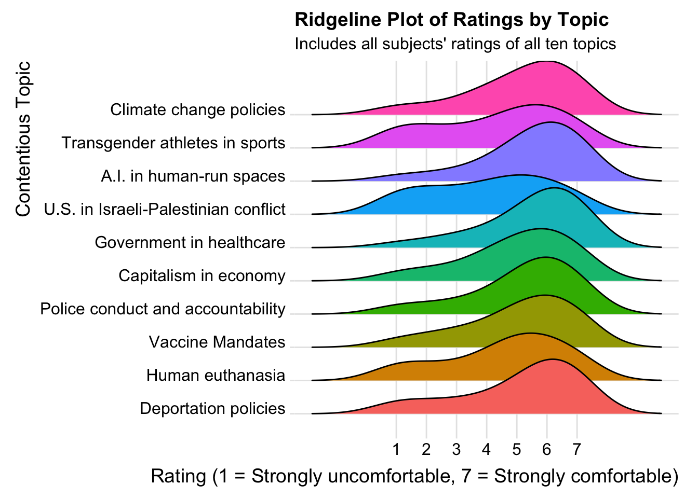
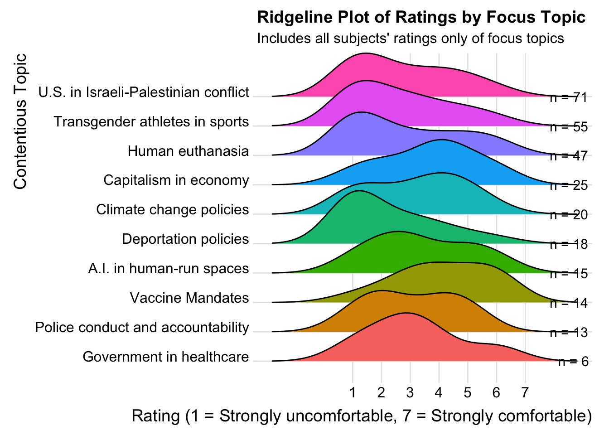
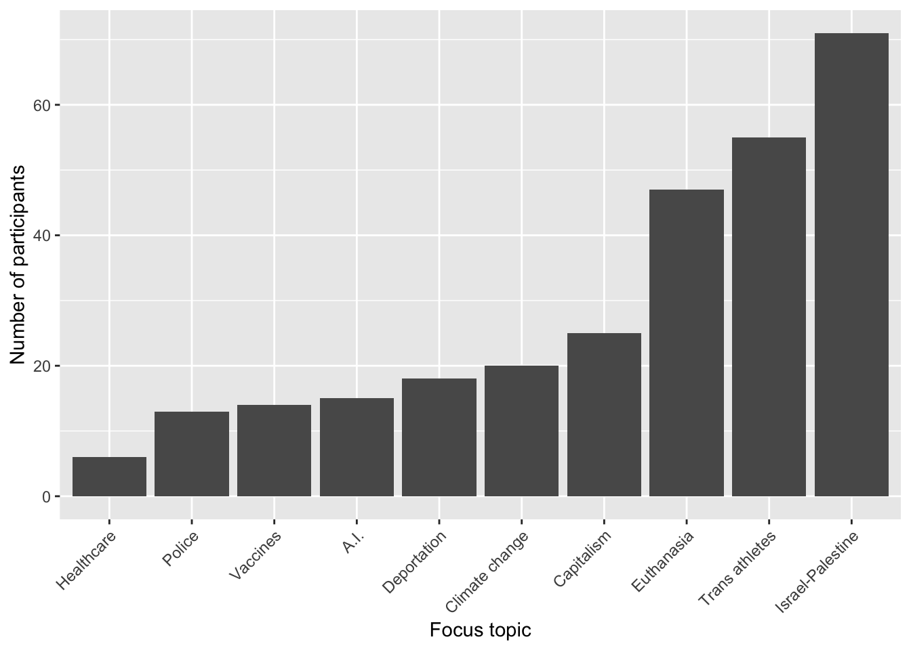
Our topic assignment method successfully generated a sample for whom engaging with their focus topic felt less than strongly comfortable, although not as uncomfortable as we were aiming for. Only 61% of subjects rated their focus topic with a rating from 1 (“Strongly uncomfortable”) to 3 (“Slightly uncomfortable”), whereas 39% of subjects rated their focus topic with a rating from 4 (“Neutral”) to 6 (“Moderately comfortable”). At a minimum, though, no participant rated their focus topic willingness at a 7 (“Strongly comfortable”), implying that no participant was wholly comfortable discussing their focus topic.
The participants with higher willingness ratings were not evenly distributed amongst the topics. As shown in Figure 2, four of the ten topics—police conduct and accountability, vaccine mandates, capitalism in economy, and climate change policy—proportionally garnered many more willingness ratings at 4 (“Neutral”) or greater than the other topics. These topics were of the less popular topics (Figure 3), but they still had a considerable number of participants, especially capitalism in the economy and climate change policies.
As shown in Figure 3, the majority of participants were least willing to discuss the role of the U.S. in the Israeli-Palestinian conflict, human euthanasia in the U.S., and transgender athletes in U.S. sports. Additionally, while deportation policy was not a popular focus topic, the ratings for this topic were lower (less willing), on average, than for the other focus topics.
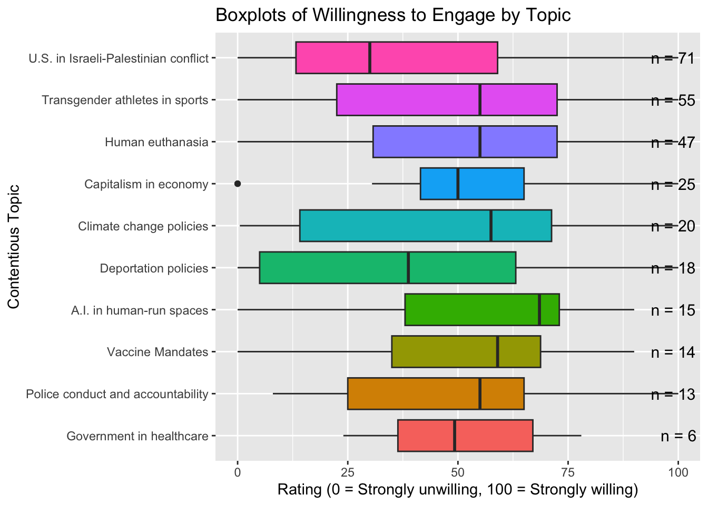
After assigning focus topics, we asked participants to rate their willingness to discuss their focus topic with someone who strongly disagrees with them and with someone who would push back against their views. Participants used a slider ranging from 0 (absolute unwillingness) to 100 (absolute willingness) to respond to each question, and we averaged the two responses to find participants’ average willingness. This assessment overlapped substantially with the focus topic selection question; however, we asked these questions separately to ensure quality of data and to use alternative phrasing that emphasized the potential divisiveness of the discussion.
Participants’ average willingness ratings, shown in Figure 4, were widely spread, with a notable density of 51% of participants reporting scores at or above the neutral point of 50. While not completely in opposition with the Likert-scale indicator of willingness, these results suggest an even greater average willingness to converse than did the Likert-scale indicator.
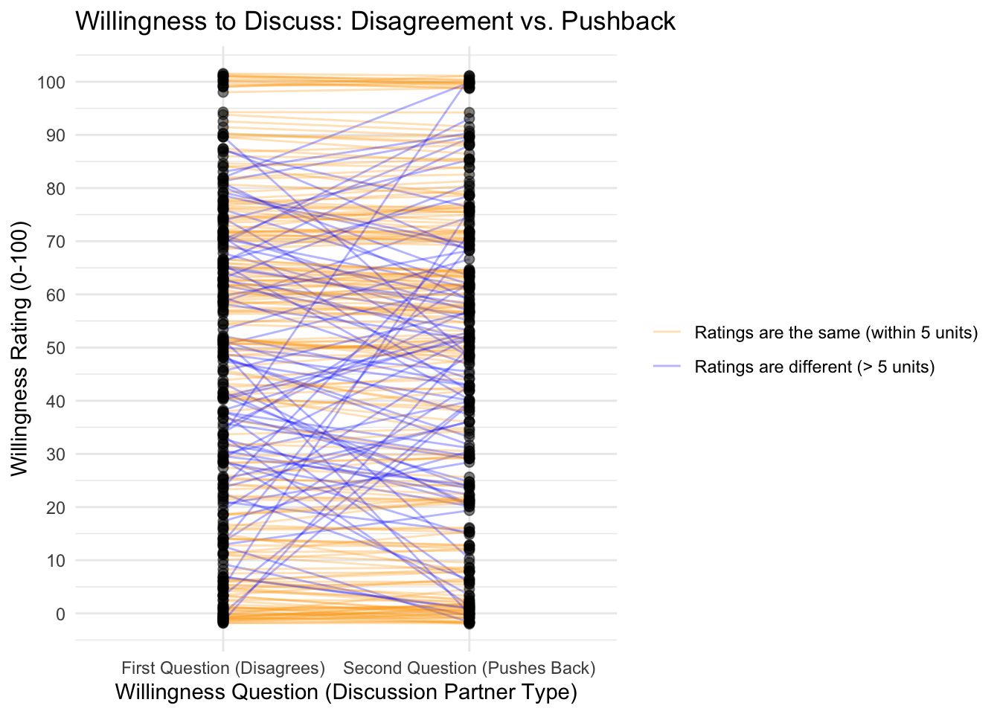
An additional curious finding is that many people gave substantially different ratings to the two questions. As seen in Figure 5, 31% of participants responded to the two willingness questions with ratings that differed by more than 5 units. The possibility that semantic framing would influence ratings is partly what drove us to include two questions rather than one, so this finding is not necessarily a bad sign. At the same time, though, it is somewhat surprising that the difference between discussing with someone who “disagrees with you” as opposed to someone who would “push back” is so great to many participants.
Brief investigation of data quality indicators
The proportion of participants who gave greatly different willingness ratings, combined with the higher-than-expected willingness ratings overall, raised a slight concern that data quality may be less than ideal, so I exploratorily analyzed the few bits of information that I have that might provide some indications of data quality.
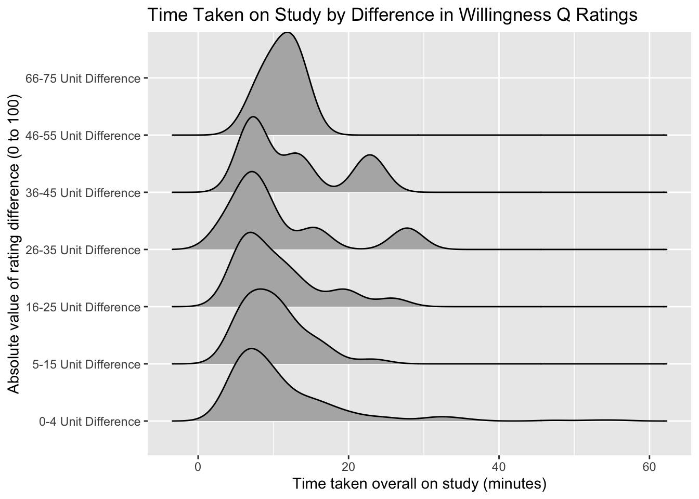
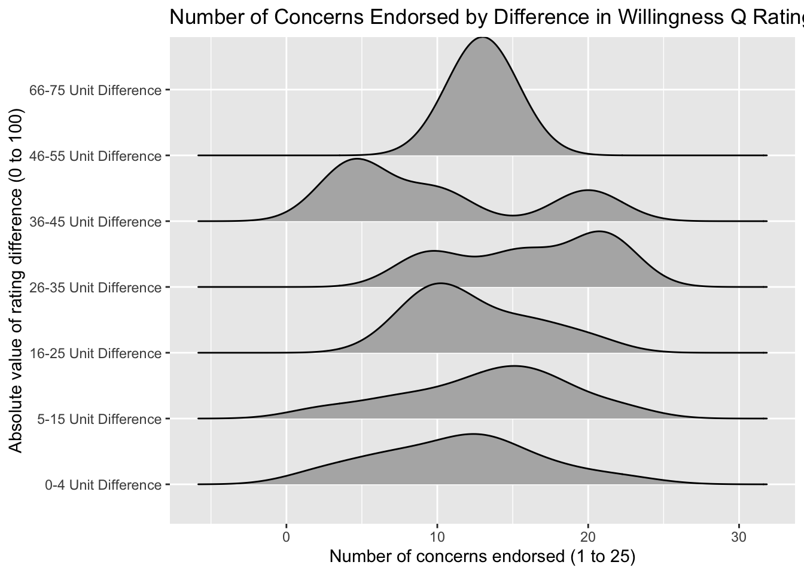
Neither Figure 6 nor Figure 7 indicate any drastic red flags. The time taken by individuals with a greater difference between their two willingness question ratings does not appear to be substantially less than the time taken by individuals with little to no difference. Likewise, the number of concerns endorsed by individuals with greater rating differences does not appear to be substantially different from individuals with little to no difference.
Distributions of Concerns Ratings & Comprehensiveness
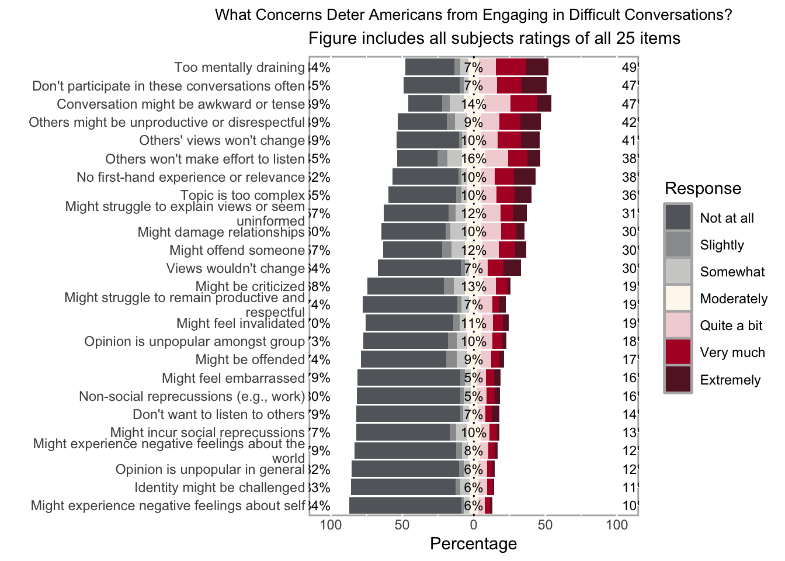
As seen in Figure 8, no single item was a concern for the overwhelming majority of the sample. Rather, most items were not concerns at all for the overwhelming majority. Part of this can be explained simply by the fact that the average participant was only concerned with a small subset of items. On average, subjects endorsed 12 concerns as impacting their willingness at all (Min = 1, LQ = 8, UQ = 15, Max = 25). Of the concerns impacting their willingness, subjects, on average, rated a given concern’s impact at 4.7 (4 = “Moderately” and 5 = “Quite a bit”) out of the 7-pt Likert scale.
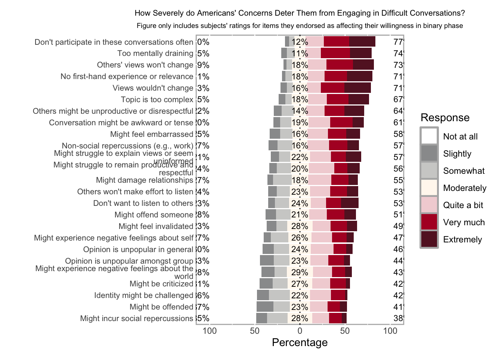
Figure 9 demonstrates that when a participant endorses an item in the binary phase, meaning it is of any concerns to them at all, it more often than not plays at least a moderate role in shaping their willingness to converse.
The top five most frequently endorsed concerns in the binary phase were: “The conversation could become awkward or tense”, “The others might not make a full effort to hear and understand me”, “I would not trust the others to keep the conversation productive and respectful (e.g., keeping emotions in check, refraining from making hostile remarks, not dominating the conversation)”, “It wouldn’t be worth the emotional and/or mental energy”, “I don’t often participate in conversations like these”.
The top five concerns most severely impacting willingness were “I don’t often participate in conversations like these”, “It wouldn’t be worth the emotional and/or mental energy”, “It would be a waste of time because my views wouldn’t change”, “I don’t have first-hand experience with the topic and/or it isn’t relevant to me”, “It would be a waste of time because the others’ views wouldn’t change”. The full distribution of severity ratings can be observed in Figure 8.
Thus, while there are differences between the most endorsed and the most influential items, a common theme begins to surface: futility and cost of emotional/mental resources.
Free response
To assess the comprehensiveness of the inventory, we analyzed the free-response data using Anthropic’s Claude with manual review on 10% of the sample for validation. Claude detected select potentially unique concerns, but these were largely one-offs. The free response data suggest that our survey sufficiently captures the primary concerns driving Americans’ reluctance to engage in conversations on controversial topics.
Profiling
Factor Analysis on Concerns
We examined the initial binary endorsement ratings of our concern items where each participant simply indicated whether an item concerned them at all, as well as the Likert-scale ratings of how much each of the endorsed items impact the participant’s willingness.
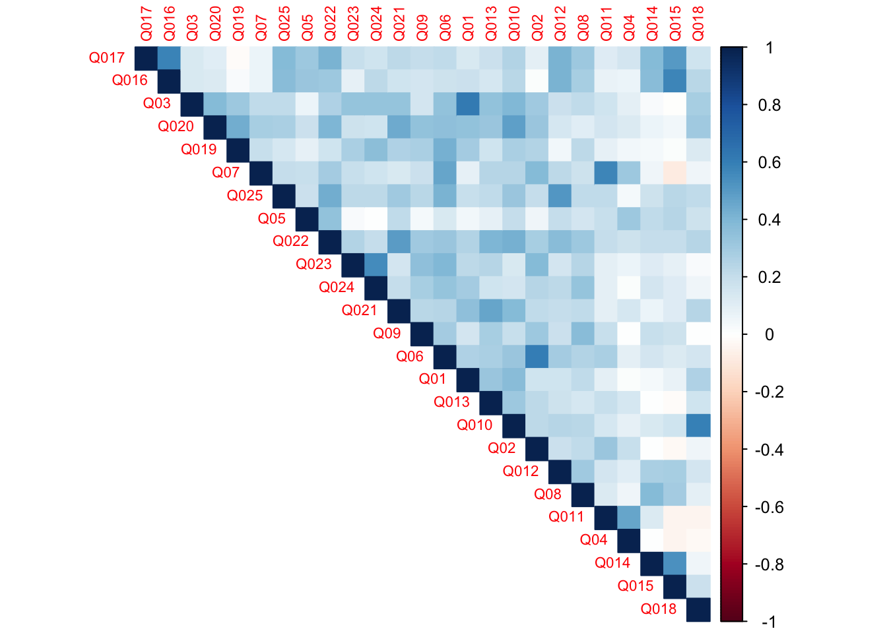
Figure 10 indicates a mix of zero to moderate positive correlation strengths between various willingness concern items. A few pairings had negative correlations, but all were very minimal. This range is consistent with the expectation that many of these concerns would overlap in some ways but that no two items represent the same concern.
| Concern | 1 | 2 | 4 | 3 |
|---|---|---|---|---|
| Opinion is unpopular amongst group | 0.73 | 0.09 | −0.07 | 0.03 |
| Opinion is unpopular in general | 0.65 | 0.10 | −0.20 | −0.15 |
| Might be criticized | 0.61 | −0.09 | 0.10 | 0.12 |
| Might offend someone | 0.57 | 0.06 | 0.04 | 0.06 |
| Non-social repercussions (e.g., work) | 0.55 | −0.04 | 0.23 | −0.14 |
| Might incur social repercussions | 0.54 | −0.11 | 0.29 | −0.02 |
| Might damage relationships | 0.43 | −0.03 | 0.11 | 0.16 |
| Conversation might be awkward or tense | 0.41 | 0.30 | 0.03 | 0.25 |
| Views wouldn't change | −0.05 | 0.77 | 0.03 | −0.16 |
| Others' views won't change | 0.10 | 0.72 | −0.03 | −0.01 |
| Too mentally draining | 0.06 | 0.71 | 0.00 | 0.09 |
| Don't want to listen to others | −0.15 | 0.61 | 0.12 | 0.01 |
| Others might be unproductive or disrespectful | 0.09 | 0.47 | 0.09 | 0.17 |
| Might struggle to remain productive and respectful | 0.01 | 0.39 | 0.35 | 0.04 |
| Others won't make effort to listen | 0.23 | 0.36 | 0.12 | 0.15 |
| Don't participate in these conversations often | 0.15 | 0.34 | −0.23 | 0.31 |
| Topic is too complex | −0.07 | 0.01 | −0.01 | 0.75 |
| Might struggle to explain views or seem uninformed | 0.05 | −0.06 | 0.11 | 0.69 |
| No first-hand experience or relevance | 0.01 | 0.02 | −0.17 | 0.57 |
| Might experience negative feelings about self | −0.01 | 0.06 | 0.67 | 0.02 |
| Might experience negative feelings about the world | 0.02 | 0.13 | 0.66 | −0.08 |
| Might feel invalidated | 0.17 | 0.07 | 0.46 | 0.30 |
| Might be offended | 0.05 | 0.16 | 0.43 | 0.10 |
| Might feel embarrassed | 0.09 | −0.09 | 0.41 | 0.38 |
| Identity might be challenged | 0.29 | −0.13 | 0.41 | 0.00 |
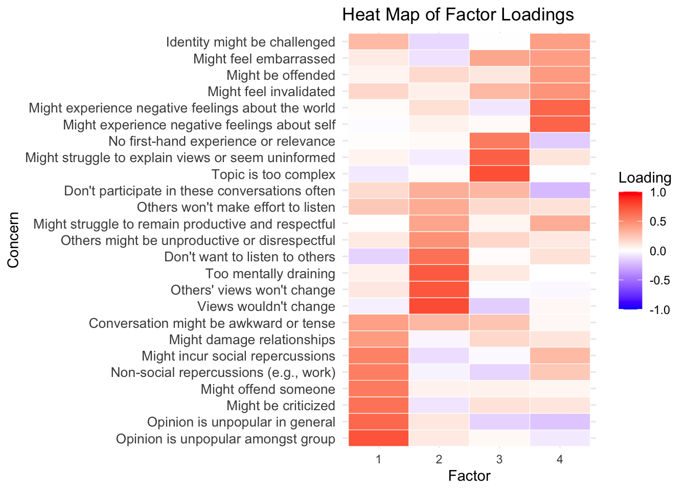
We conducted an exploratory factor analysis (EFA) on the concern items using oblimin rotation to identify latent factors that could reflect correlated concerns. Parallel analysis suggested a four-factor solution, which accounted for 42.4% of the total variance. The factors were moderately correlated (\(r\) = -0.08–0.61) as shown in Table 2 and Figure 11 (which accomplish the same thing; I included Table 2 for its descriptiveness and Figure 11 for its visual ease). Many cross-loadings were present, consistent with the expectation of conceptual overlap among factors. We retained all items to allow full examination of the emerging structure.
If these factors reveal true overarching themes in the concern items, we interpret them as:
Social & Reputation Consequences (Factor 1): This factor reflects fears of external, social consequences. The items in this factor are: ‘Non-social repercussions (e.g., work)’, ‘Opinion is unpopular amongst group’, ‘Might damage relationships’, ‘Opinion is unpopular in general’, ‘Might be criticized’, ‘Might offend someone’, ‘Conversation might be awkward or tense’, ‘Might incur social repercussions’.
Perceived Futility & Emotional Cost (Factor 2): This factor reflects a sense that the conversation is not worth engaging in because it will not amount to anything or it will be too emotionally or mentally costly. The items in this factor are: “Others might be unproductive or disrespectful”, “Don’t want to listen to others”, “Views wouldn’t change”, “Others’ views won’t change”, “Too mentally draining”, “Others won’t make effort to listen”, “Don’t participate in these conversations often”, “Might struggle to remain productive and respectful”.
Unpreparedness for Complex Topic (Factor 3): This factor captures doubts of knowledge about topic and ability to convey one’s ideas. The items in this factor are: ‘Topic is too complex’, ‘No first-hand experience or relevance’, ‘Might struggle to explain views or seem uninformed’.
Personal Vulnerability & Identity Threat (Factor 4): This factor consists of items focusing on internal psychological distress and threats to the participant’s self-concept or core beliefs. The items in this factor are: ‘Identity might be challenged’, ‘Might feel embarrassed’, ‘Might experience negative feelings about self’, ‘Might experience negative feelings about the world’, ‘Might feel invalidated’, ‘Might be offended’.
About 89 percent of subjects endorsed at least one concern in factor 1 (Social & Reputation Consequences). On average across the entire sample, subjects endorsed 4.2 of the 8 items in factor 1. Similarly, 96 percent of subjects endorsed at least one concern in factor 2 (Perceived Futility & Emotional Cost). On average across the entire sample, subjects endorsed 4.6 of the 8 items in factor 2. 79 percent of subjects endorsed at least one concern in factor 3 (Unpreparedness for Complex Topic). On average across the entire sample, subjects endorsed 2.1 of the 3 items in factor 3. Finally, 71 percent of subjects endorsed at least one concern in factor 4 (Personal Vulnerability & Identity Threat). On average across the entire sample, subjects endorsed 2.7 of the 6 items in factor 4.
Factor scores were computed using the regression method. Factor 1 was the dominant concern domain for 19 percent of participants. Factor 2 was the dominant concern domain for 28 percent of participants. Factor 3 was the dominant concern domain for 25 percent of participants. Factor 4 was the dominant concern domain for 28 percent of participants.
PCA & Hierarchical Cluster Analysis
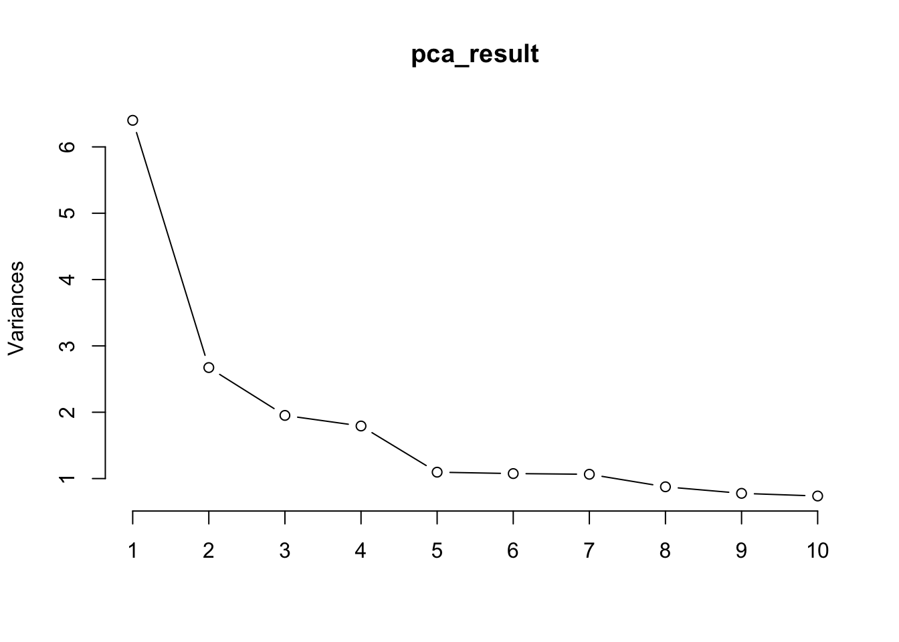
We conducted a principal component analysis (PCA) on participants’ concern rating profiles to examine the dimensionality of their responses. The scree plot (Figure 12) indicated that four principal components captured the majority of explainable variance, and we focus our interpretation on these.
The first principal component, accounting for 26% of variance, showed uniformly positive loadings across all items (range of 0.10–0.27). This pattern is consistent with a general response factor: participants who score high on PC1 rate all concerns highly, reflecting an overall tendency toward greater reluctance rather than concern about any particular aspect of conversation. The second, third, and fourth principal components all had at least four items that loaded onto the components with magnitudes of 0.29 and greater; the greatest loading on the first principal component is 0.27, with most items loading in the tenths.
| PC2 | |
|---|---|
| Views wouldn’t change | 0.43 |
| Others’ views won’t change | 0.38 |
| Too mentally draining | 0.35 |
| Don’t want to listen to others | 0.34 |
The second principal component accounted for 11% of variance. Its highest-loading items reflect concerns about the futility of engagement and the anticipated emotional or mental costs outweighing potential benefits. This pattern is consistent with the sentiments observed in Figure 8 and Figure 9 and reflects factor 2 (Perceived Futility & Emotional Cost) from the factor analysis.
| PC3 | |
|---|---|
| Opinion is unpopular in general | -0.35 |
| No first-hand experience or relevance | 0.38 |
| Non-social repercussions (e.g., work) | -0.30 |
| Topic is too complex | 0.46 |
| Might struggle to explain views or seem uninformed | 0.37 |
The third principal component accounted for 8% of variance and contrasted two distinct sources of reluctance. Positively loading items comprise factor 3 (Unpreparedness for Complex Topic) from factor analysis, reflecting a sense of being ill-equipped to engage due to topic complexity, limited first-hand experience, or difficulty articulating one’s views. Negatively loading items reflected concern about holding an unpopular opinion and the social consequences that might follow from expressing it; both of these items factored into factor 1 (Social & Reputation Consequences) during factor analysis.
| PC4 | |
|---|---|
| Don’t participate in these conversations often | -0.30 |
| Opinion is unpopular in general | -0.29 |
| Might experience negative feelings about the world | 0.41 |
| No first-hand experience or relevance | -0.29 |
| Might experience negative feelings about self | 0.39 |
The fourth principal component accounted for 7% of variance and captured a similar but distinct contrast. Negatively loading items reflected reluctance stemming from unfamiliarity with the topic and with navigating disagreement; these items all loaded into different factors during factor analysis. Positively loading items reflected avoidance motivated by anticipated negative affect, both self-directed and directed toward others; these items both fell into factor 4 (Personal Vulnerability & Identity Threat).
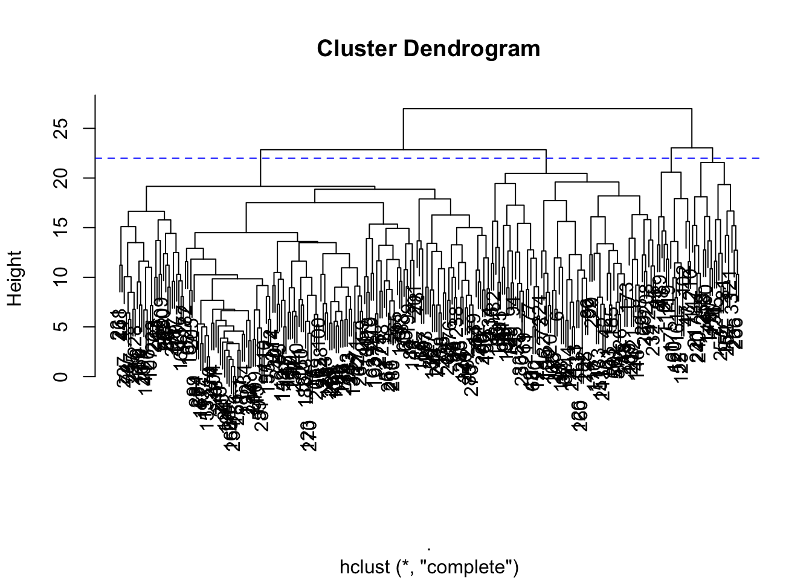
I also conducted hierarchical clustering (euclidean distance, complete linkage), on participants’ ratings of concerns to determine whether there are trends in participants ratings that could form general participant concern profiles (Figure 13). I chose to use four clusters primarily to avoid extremely small clusters (see the cluster to the far right in Figure 13). As seen in Figure 13, many participants fell into one cluster; this pattern was more extreme in the case of single linkage, which motivated my choice of complete linkage.
The trend of one cluster or factor comprising a large proportion of participants continually recurred throughout my analyses, and was one of the major motivations for my use of so many profiling methods.
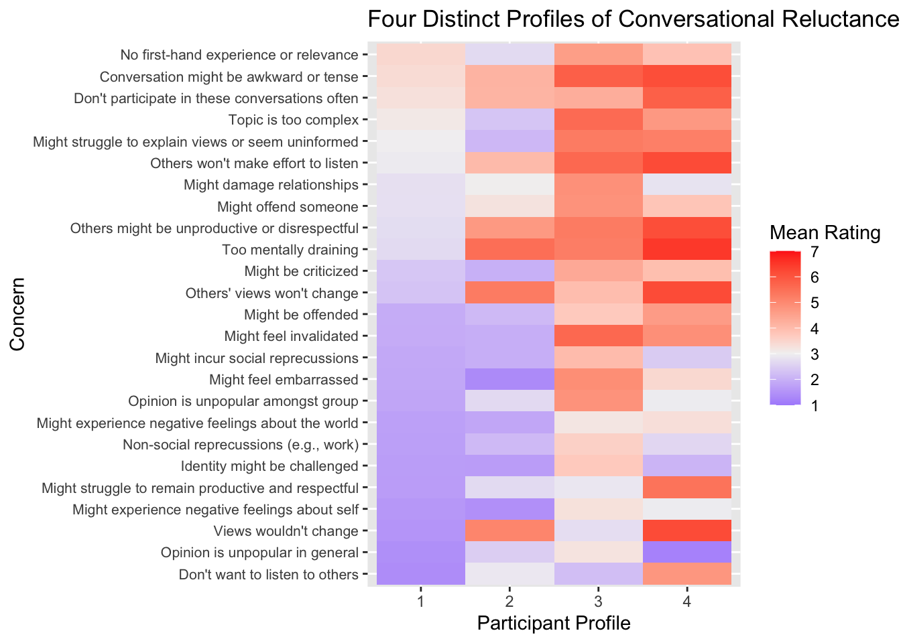
The majority of participants, 59.9%, fell into cluster 1, averaging relatively low concern across most items (Figure 14). This suggests that most participants in the sample self-reported as endorsing few concerns and not showing meaningful reluctance towards any particular aspect of conversing. This somewhat aligns with PCA’s first principal component, which captures the notion that one primary profiling dimension is participants’ severity of ratings overall.
A further 26.8% of participants fell into cluster 2. These participants overlapped with much of cluster 1’s lack of concern for many items; however, there were some differences in what did not concern cluster 2 compared to cluster 1; additionally, cluster 2 showed greater concern for many items that cluster 1 rated as only slightly concerning. Cluster 2 showed a relative elevation on items related to views changing (both their own and others’), emotional and mental costs, conversation awkwardness, and conversation futility.
Cluster 3 participants, 7.7% of the sample, reported moderate-to-high concern broadly with particular elevation on items reflecting a sense of being ill-equipped to engage. This included struggling to explain their views, feeling invalidated, and finding the topic too complex. Their reluctance appears driven primarily by fear of others being disrespectful and not giving the participant the psychological safety and respect needed to imperfectly navigate the topic, as opposed to concerns like listening to others.
Cluster 4 participants reported the highest concern overall, with especially strong ratings on items reflecting anticipated futility: that the conversation would be too mentally draining, that they and others would struggle to remain respectful and productive, and that neither their own nor others’ views would change as a result. Unlike cluster 3’s suspicion that the others will not give them the space to navigate the topic and be heard, cluster 4’s reluctance seems bidirectional and focused on productivity. Just 5.6% of participants fell into cluster 4.
Taken together, the four clusters may suggest a sort of floor effect on severity ratings that compresses most participants into the low-concern region and prevents finer differentiation by concern types. Overall level of reluctance seems to be the driving factor that captures a participant in cluster 1 and potentially even cluster 2, the largest clusters. The two smaller clusters then have subsets of concerns surface: cluster 3 is concerned about competency in the conversation and others not listening nor allowing for imperfection, whereas cluster 4 is skeptical of both parties’ abilities to maintain a productive atmosphere and reach a useful conclusion.
These findings should be interpreted in light of the methodological consideration that although participants rated all 25 concern items, on average, only 12 concerns actually affected a given participant’s willingness to engage. I chose to impute the non-endorsed concerns as 1s so that I could conduct analyses like factor analysis and PCA; however, this may have deflated mean ratings across the board, potentially pushing participants toward the lower-concern clusters and even masking undetected concern profiles. The low ratings in Clusters 1 and 2 may therefore reflect not an absence of reluctance per se, but rather that most participants’ reluctance is relatively selective. This, as well as the small sizes of clusters 3 and 4, could possibly be explored further through bootstrap sampling or probabilistic PCA (need to learn more about probabilistic PCA).
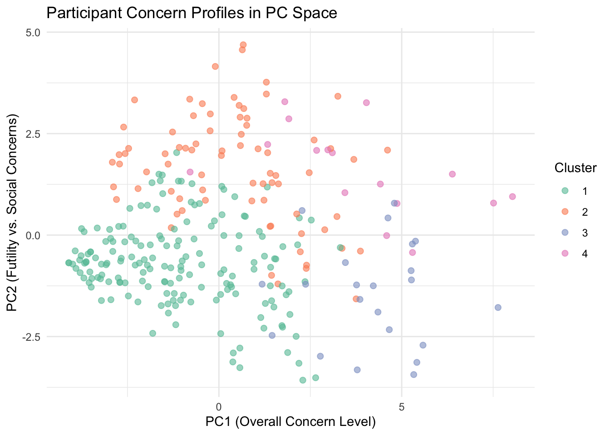
Figure 15 demonstrates that the four clusters occupy meaningfully distinct regions of the PCA space, with PC1 (overall concern level) serving as the primary axis of separation. Cluster 1 sits at the low end of PC1, consistent with its broadly low concern profile, while cluster 4 sits at the high end, consistent with its broadly elevated concern profile. Cluster 2 separates from cluster 1 primarily along PC2 rather than PC1, indicating that these participants might not be substantially more concerned overall but are elevated on futility- and emotional-cost-related items. This corroborates the cluster-mean pattern in Figure 14. Cluster 3 occupies greater PC1 values without strong PC2 elevation, consistent with its profile being defined by a different component and relatively greater overall concern than clusters 1 and 2. Taken together, this projection supports the interpretation that overall reluctance level (PC1) is the dominant axis distinguishing participants, with futility-emotional cost concerns (PC2) acting as a secondary differentiator that primarily distinguishes Cluster 2 from Cluster 1.
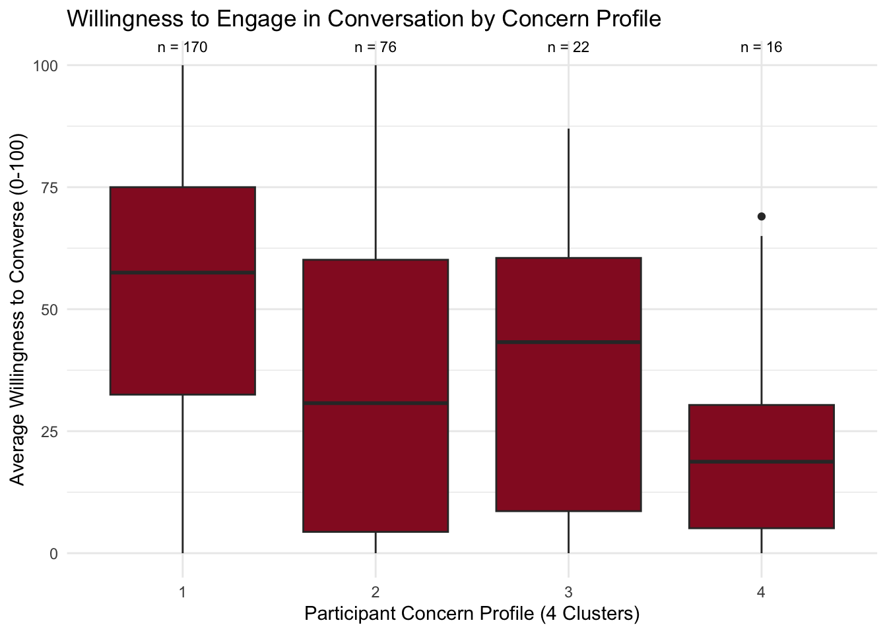
Figure 16 generally corroborates the average valences of clusters as seen in Figure 14: Cluster 1’s lack of concern severity corresponds to a higher willingness to converse and cluster 4’s great concern severity corresponds to a lower willingness to converse. Cluster 2’s wide spread and lesser median compared to cluster 3 may be indicative of cluster 2’s role as somewhat of a bridge between the lack of concern from cluster 1 and the strong but specialized sets of concerns in clusters 3 and 4.
Latent Profile Analysis
I intend to conduct latent profile analysis after graduation.
Open-mindedness & Willingness Relationship
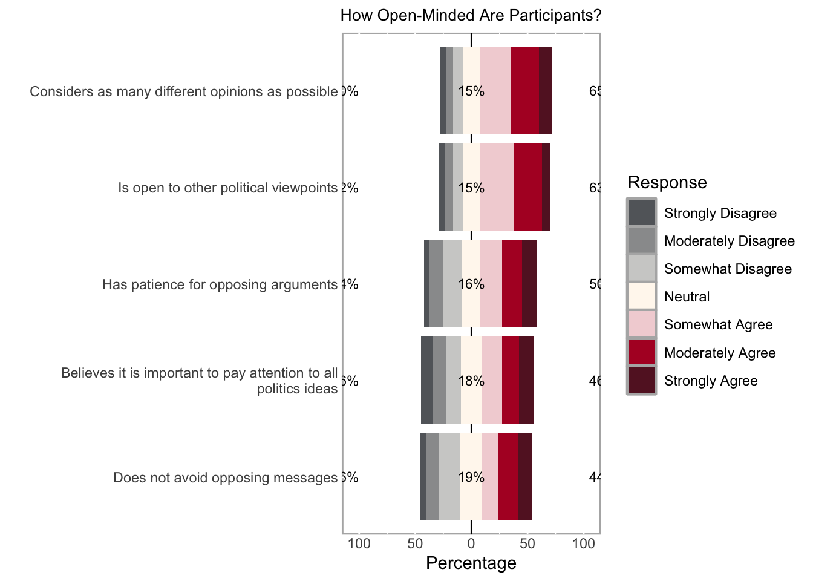
On average, subjects rated their open-mindedness at 4.5 out of 7 (Range of 1-7), where 1 is less open-minded and 7 is more open-minded, as observed in Figure 17. Given the prevalence of ideas related to emotional and mental cost, conversation futility, and lack of expertise on complex topics, as well as indications that many participants anticipate that others will not listen to the participants’ views, it is notable here that “Does not avoid opposing messages” and “Believes it is important to pay attention to all political ideas” respectively have the first and second lowest open-mindedness ratings from participants.
Accounting for the concerns that participants did not endorse as “not at all” impacting participants’ willingness, we found that 11 of the 25 concern items were significantly correlated with average open-mindedness.
These significant concerns were “I would not want to listen to the others discuss their views” (\(r\) = -0.485, \(p\) = < 0.001), “It would be a waste of time because my views wouldn’t change” (\(r\) = -0.476, \(p\) = < 0.001), “It wouldn’t be worth the emotional and/or mental energy” (\(r\) = -0.388, \(p\) = < 0.001), “It would be a waste of time because the others’ views wouldn’t change” (\(r\) = -0.363, \(p\) = < 0.001), “I would not trust the others to keep the conversation productive and respectful (e.g., keeping emotions in check, refraining from making hostile remarks, not dominating the conversation)” (\(r\) = -0.255, \(p\) = < 0.001), “I might struggle to remain productive and respectful” (\(r\) = -0.247, \(p\) = < 0.001), “I don’t often participate in conversations like these” (\(r\) = -0.215, \(p\) = < 0.001), “I might feel disempowered, unheard, or invalidated” (\(r\) = -0.175, \(p\) = < 0.01), “The conversation could negatively affect how I feel about the world during and/or afterward” (\(r\) = -0.17, \(p\) = < 0.01), “I might take offense to what someone says” (\(r\) = -0.169, \(p\) = < 0.01) and “The conversation could negatively affect how I feel about myself during and/or afterward (e.g., fear, sadness, anger, vulnerability)” (\(r\) = -0.16, \(p\) = < 0.01).
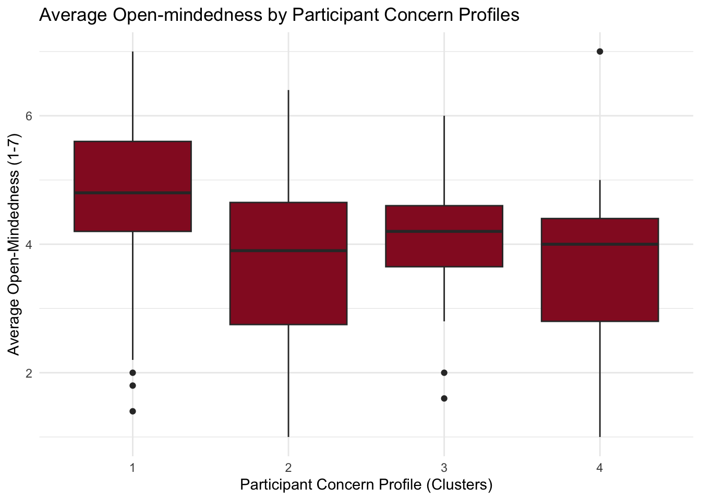
Figure 18 communicates a similar pattern to Figure 16: Cluster 1 shows the greatest concentration of open-mindedness and cluster 4 shows relatively low concentrations of open-mindedness. Notably, cluster 2’s median and lower quartile are slightly lower than cluster 4’s; cluster 2 still maintains the largest range, though, which remains consistent with Figure 16.
Demographics & Willingness Relationship
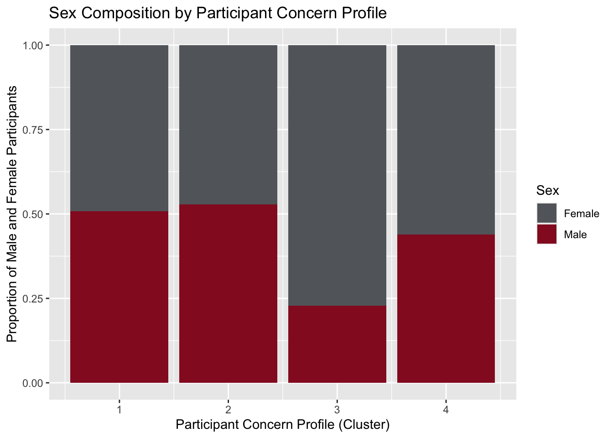
Figure 19 shows some differences in sex composition by cluster, particularly in cluster 3, but a chi-square test of independence indicated that sex did not significantly differ across clusters, χ²(3, N = 284) = 6.98, p = 0.073. Cluster 3 had a relatively small number of participants, so the chi-square test may have been underpowered.
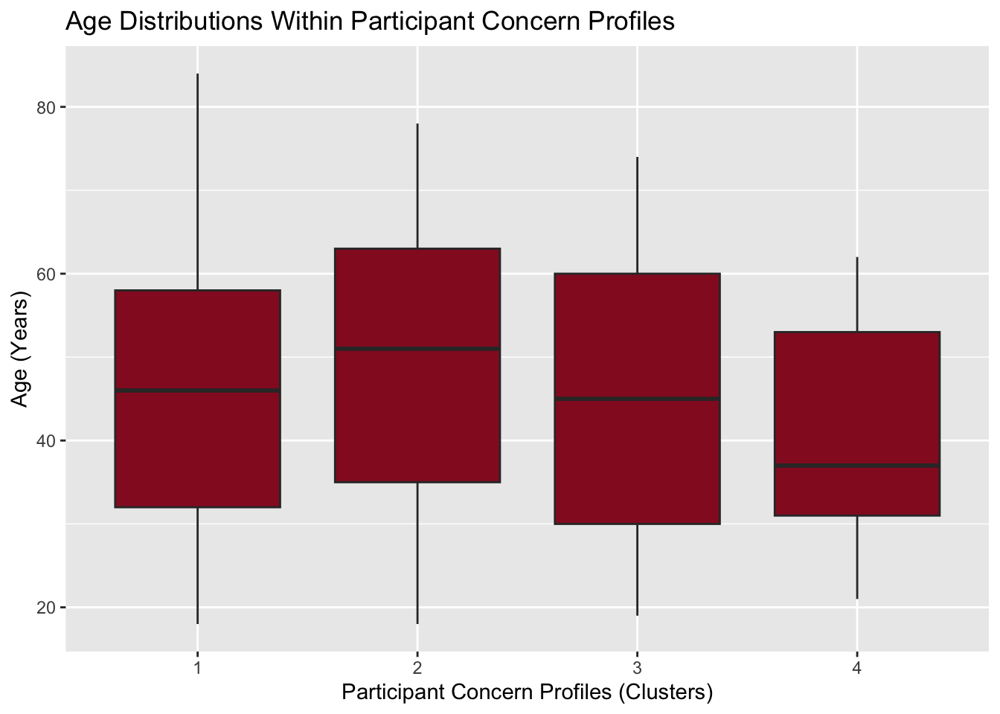
Figure 20 also shows some variation in age distributions, but a one-way ANOVA indicated that age did not significantly differ across clusters, F(3, 280) = 1.3, p = .276.
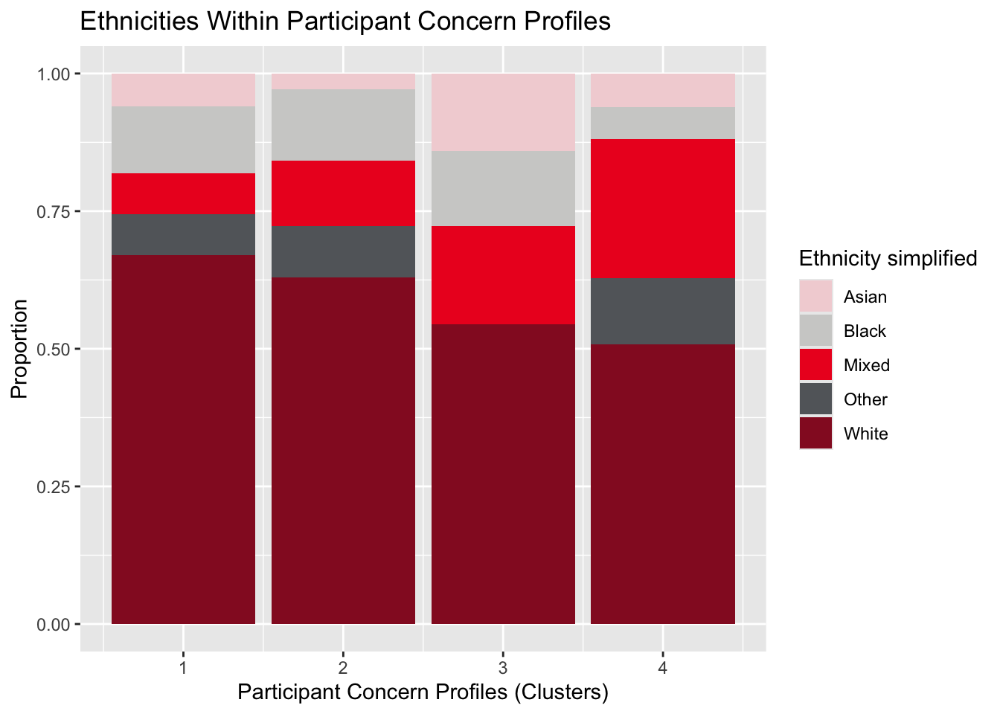
Figure 21 showed some variation as well, but a chi-square test of independence indicated that ethnicity did not significantly differ across clusters, χ²(3, N = 284) = 2.67, p = 0.445.
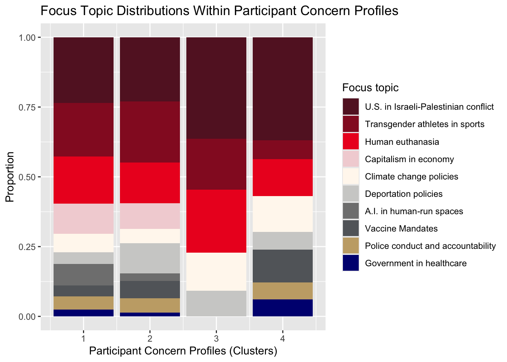
Figure 22 also showed some variation, but a Monte Carlo chi-square test of independence (based on 10,000 replicates) indicated that focus topic did not significantly differ across clusters, χ²(N = 284) = 26.93, p = 0.462. I used Monte Carlo because of the low counts for some clusters in some topics, but I could have also tried other statistical significance measures. The differences look relatively random and this is exploratory anyway, so I was not too concerned with nuances in methodology here.
Overall Willingness & Willingness Concerns Relationships
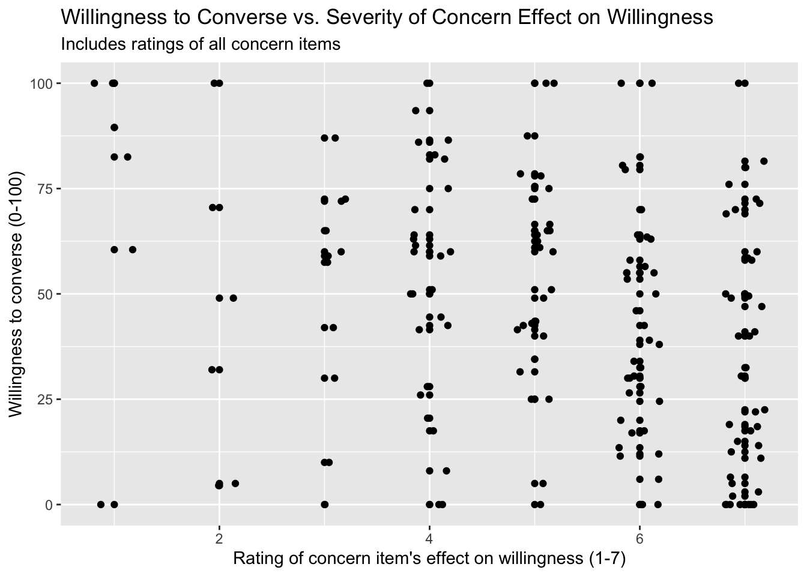
I looked for correlations between each willingness concern and average willingness as indicated by the two slider questions. This served as something like a sanity check as I would expect more severe ratings of concern items to be associated with lower willingness to converse; however, a lack of correlation could be explained by the idea that one concern item’s severity may not register strongly enough against the type of background of 24 other concern items with which it is typically associated to singularly be correlated with willingness to converse.
More than half of the concern items were negatively associated with willingness, suggesting that, for most items, a greater impact of the concern on an American’s willingness is associated with lower willingness to engage.
These 15 concern items were “Views wouldn’t change” (\(r\) = -0.439, \(p\) = < 0.001), “Don’t want to listen to others” (\(r\) = -0.401, \(p\) = < 0.001), “Too mentally draining” (\(r\) = -0.391, \(p\) = < 0.001), “Don’t participate in these conversations often” (\(r\) = -0.356, \(p\) = < 0.001), “Others’ views won’t change” (\(r\) = -0.32, \(p\) = < 0.001), “Others might be unproductive or disrespectful” (\(r\) = -0.28, \(p\) = < 0.001), “Conversation might be awkward or tense” (\(r\) = -0.255, \(p\) = < 0.001), “Might struggle to remain productive and respectful” (\(r\) = -0.23, \(p\) = < 0.001), “Might feel invalidated” (\(r\) = -0.168, \(p\) = < 0.01), “Might offend someone” (\(r\) = -0.148, \(p\) = < 0.05), “Might be offended” (\(r\) = -0.146, \(p\) = < 0.05), “No first-hand experience or relevance” (\(r\) = -0.126, \(p\) = < 0.05), “Topic is too complex” (\(r\) = -0.125, \(p\) = < 0.05), “Might experience negative feelings about self” (\(r\) = -0.122, \(p\) = < 0.05) and “Might feel embarrassed” (\(r\) = -0.118, \(p\) = < 0.05).
Discussion
Comprehensiveness of Concerns
Through a qualitative analysis of participants’ free-response explanations for avoiding difficult conversations, we found that the concerns participants raised were well-represented in the 25-item inventory. The few concerns that did not map cleanly onto existing items appeared as one-off mentions rather than true gaps. This suggests that the questionnaire comprehensively covers the primary reasons Americans report for unwillingness to engage in conversations on controversial topics, and that further item additions are not warranted at this stage. It is worth noting here, though, that low-concern profiles dominate the sample, which does not align with the intuitive expectation that we would see a more dramatic trend of conversational reluctance amid the rise of American affective polarization (e.g., Boxell, Gentzkow, and Shapiro (2020)).
Structure of Concerns
Our second objective was to explore the latent structure of the 25 concerns. An Exploratory Factor Analysis suggested a four-factor solution accounting for 42.4% of the total variance: Social & Reputation Consequences, Perceived Futility & Emotional Cost, Unpreparedness for Complex Topic, and Personal Vulnerability & Identity Threat. PCA on the same items recovered some related structures: PC2 mapped onto Perceived Futility & Emotional Cost, PC3 contrasted Unpreparedness against Social Consequences, and PC4 contrasted topic unfamiliarity with anticipated negative affect, which supports the robustness of the factor structure across methods. The clustering analysis, however, recovered only one factor-aligned profile (Cluster 2, elevated on futility/emotional cost). The more selective Clusters 3 and 4 instead combined items across factors, suggesting that participants tend to experience these concerns in combinations rather than as cleanly siloed dimensions. The factor structure may therefore be more useful as a measurement framework than as a typology of participants, which aligns with the theoretical background for factor analysis compared to participant-centered profiling methods. Additionally, it is worth noting here that none of these methods accounted for a good majority of variance, meaning there may be more at play, that concern profiles are more uniquely individual, or that other profiling analysis methods should be employed.
Low-valenced ratings
A primary takeaway from this study is that participants frequently rated their willingness as higher than we had hoped for (in the sense that we want to target and measure low-willingness situations or individuals) and rated the severity of their concerns very low. This was reflected in participants’ ratings of their focus topics, in their ratings of overall willingness, and in their ratings of concern item severities. Three plausible explanations come to mind to explain this outcome.
First, participants may be responding aspirationally, thus inflating results. Participants may consciously or unconsciously be reluctant to admit to the survey, themself, or both that they are moderately to strongly unwilling to converse or are swayed by certain items.
Second, the questions may not have elicited the specific kind of reluctance we aim to measure. The topic-comfort Likert item asks about discussing the topic in a group scenario, the slider items specify a particular discussion partner (someone who disagrees, someone who pushes back), and the concern items ask about a serious conversation. Participants may have envisioned different conversational contexts across the formats and even across the concern items, and they may have not envisioned the scenarios in which they are least willing to engage. Anticipation of contextual influence partly motivated us to include these different framings, as capturing a few framings would be better than doubling down on one single framing, but this also indicates the limitation of trying to capture a very situation-dependent phenomenon in a decontextualized way. If willingness is fundamentally contextual, then asking about it abstractly may produce a noisy average rather than a stable trait-like estimate.
Third, samples for this kind of study may self-select for people who are more willing to discuss controversial topics. Prolific users who are less willing to discuss controversial topics may have skipped over this study when browsing their options more often than users who are more willing.
Moving Forward
Measuring Willingness Concerns
One direction worth exploring is asking participants to anchor their responses to a specific context, such as the context in which they are least willing to converse. We initially considered and rejected a context-specific approach of any kind on the reasoning that the intervention aims to increase willingness broadly, and we rejected the worst-case-scenario context approach because these cases may be so extreme that our intervention will likely not be radically transformative enough to evoke meaningful changes in these contexts. However, there could be merit in asking participants to consider a situation in which they recognize that engagement would be useful or beneficial but nonetheless feel unwilling.
Given the indications above that willingness ratings are weakly valenced and likely situational, a context-anchored design may produce more interpretable ratings and a more tractable target for intervention. The argument that people will not budge on the most extreme contexts but may budge in moderate ones remains relevant: someone who will never discuss deportation policy with hostile colleagues may still meaningfully shift in their willingness to raise the topic with friends. Asking participants to nominate a context in which they feel unwilling to converse but that engagement would be beneficial or worthwhile could capture exactly the margin our intervention is more suited to move. The tradeoff here, though, would be placing the responsibility of situation identification on the participants: whether participants can readily generate such a context, and how many will feel that one exists for them, remain open questions.
Applying Findings to MOCA
For Assessing MOCA’s Effectiveness
I see two main ways to apply these findings to assess MOCA’s effectiveness. Currently, the experiment structure for assessing MOCA’s effectiveness looks like having participants complete a survey, which includes the very first rudimentary draft of this questionnaire, both before and after conversing with MOCA. This allows us to assess whether MOCA ameliorates any issues in qualities like open-mindedness or in willingness concerns.
One option is to implement the full 25-item list in the MOCA experiment’s survey to gain extensive insight into MOCA’s strengths and weaknesses. This would be very informative and interesting to analyze; however, it could give rise to participant fatigue and would increase study duration (which would in turn require more funding or fewer participants to conduct).
If a 25-item list is too extensive, we could instead draw on factor analysis. This could look like summarizing the items within each factor into a few sentences and using these, along with the factor titles, as factor descriptors. Participants could then rate the severity of each factor’s effect on their willingness to converse, reducing survey length while still capturing useful information. This would be much less informative compared to the full questionnaire and would potentially introduce noise that could cause our evaluations of MOCA’s effectiveness in each factor to converge toward neutrality; however, this method could also pan out to be very informative, and it is much more resource efficient.
For Improving MOCA
In an ideal conversation with MOCA, the human would accurately report their main concerns to MOCA (which MOCA asks about in one of the initial messages) and then MOCA’s subsequent behaviors would in part be shaped to address these concerns (which MOCA is currently prompted to do). This would allow MOCA to be flexibly shaped on a case-by-case basis in real-world usage to address each individual’s concerns.
In an experimental setting, the concern items that an individual endorses and the severity of these concerns could be reported to MOCA for even more customized intervention; however, this would require the same questionnaire procedure in real-world applications which may not be very realistic.
Currently, MOCA addresses a user’s concerns through a prompt that simply tells MOCA to identify the user’s concerns (which should be explicitly stated by the user in response to MOCA’s question of why the user is reluctant) and then respond with these concerns in mind. Perhaps, though, providing MOCA with this study’s questionnaire and results could allow MOCA to perform this identification phase with the background information that would allow it to identify the fundamental concerns that a user has. This could then improve MOCA’s ability to target the user’s concerns. For example, a user might say they do not want to converse about a topic because it stresses them out. MOCA would then be able to draw on the 25-item inventory to identify the candidates that might underlie the umbrella of stress, and then give candidate-informed responses. This could potentially allow the conversation to better address the user’s true concerns. Additionally, perhaps MOCA could perform a second identification step partway through the conversation; in this phase, MOCA could refine the list of candidate items by assessing which candidates seem to be surfacing in the user’s messages.
In the longer term, were MOCA developed into an agent that could learn from its conversations with users (especially if something like a quick rate-your-experience button were added to the ends of conversations), MOCA would potentially be able to develop a skill set for helping users based on their concern profile or even on each of their concerns. I am not sure how this would work while using a proprietary LLM and needing to maintain user privacy, but this could be very influential in MOCA’s performance as an intervention.
Limitations
The primary limitation of this study is the reliance on self-report measures for all key variables (concerns, willingness, and open-mindedness). I’ve offered some explanations for the within-subject differences in ratings of overall willingness and for the relatively low-valenced ratings amidst the current climate of American discourse, but these results may also reflect the inherent difficulties in measuring these constructs. Future work should integrate behavioral or implicit measures to provide a more objective assessment.
In conclusion, this pretest supports the 25-item questionnaire as a valuable tool for measuring the multifaceted barriers to productive discourse on controversial topics.
References
Aldao, Amelia, Susan Nolen-Hoeksema, and Susanne Schweizer. 2010. “Emotion-Regulation Strategies Across Psychopathology: A Meta-Analytic Review.” Clinical Psychology Review 30 (2): 217–37.
Beatty, M. J. 1987. “Communication Apprehension as a Determinant of Avoidance, Withdrawal and Performance Anxiety.” Communication Quarterly 35 (2): 202–17.
Boxell, Levi, Matthew Gentzkow, and Jesse M Shapiro. 2020. “Cross-Country Trends in Affective Polarization.” Working Paper 26669. Working Paper Series. National Bureau of Economic Research. https://doi.org/10.3386/w26669.
Chen, Hsuan-Ting. 2018. “Spiral of Silence on Social Media and the Moderating Role of Disagreement and Publicness in the Network.” New Media & Society 20 (12): 4596–616.
Elnakouri, Abdo, Alex C. Huynh, and Igor Grossmann. 2024. “Explaining Contentious Political Issues Promotes Open-Minded Thinking.” Cognition 247: 105769. https://doi.org/10.1016/j.cognition.2024.105769.
Haug, M., C. Maier, H. Gewald, and T. Weitzel. 2025. “Supporting Opinions to Fit in: A Spiral of Silence-Theoretic Explanation of Online Self-Censorship.” Internet Research 35 (1).
Hunter, J. A., M. J. Platow, and M. L. Howard. 1996. “Social Identity and Intergroup Evaluative Bias: Realistic Categories and Domain Specific Self-Esteem in a Conflict Setting.” European Journal of Social Psychology 26: 631–48.
Kahneman, Daniel. 2011. Thinking, Fast and Slow. Farrar, Straus; Giroux.
Leeuw, Joshua R. de, Ryan A. Gilbert, and Benjamin Luchterhandt. 2023. “jsPsych: Enabling an Open-Source Collaborative Ecosystem of Behavioral Experiments.” Journal of Open Source Software 8 (85): 5351. https://doi.org/10.21105/joss.05351.
Lewandowsky, Stephan, Ullrich K. H. Ecker, and John Cook. 2017. “Beyond Misinformation: Understanding and Coping with the ‘Post-Truth’ Era.” Journal of Applied Research in Memory and Cognition 6: 353–69.
Masters, M. R., M. J. Zimmer-Gembeck, and L. J. Farrell. 2019. “Transactional Associations Between Adolescents’ Emotion Dysregulation and Symptoms of Social Anxiety and Depression.” Journal of Early Adolescence 39 (4): 492–515.
Noelle-Neumann, Elisabeth. 1974. “The Spiral of Silence: A Theory of Public Opinion.” Journal of Communication 24 (2): 43–51.
Schulenberg, T. et al. 2023. “Exploring Communication Apprehension in Nursing and Healthcare Education: A Scoping Review.” Nursing & Health Sciences 25: 130–45.
Tajfel, Henri, and John C. Turner. 1979. “An Integrative Theory of Intergroup Conflict.” In The Social Psychology of Intergroup Relations, edited by William G. Austin and Stephen Worchel, 33–47. Brooks/Cole.